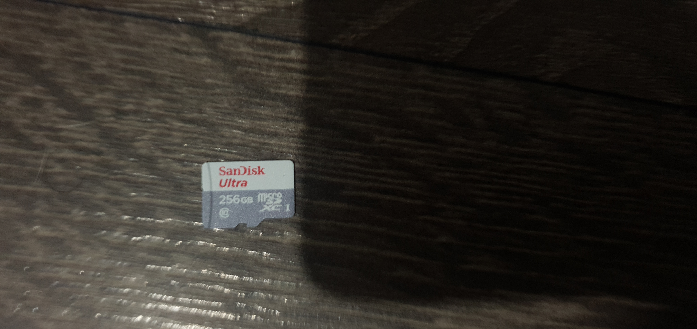
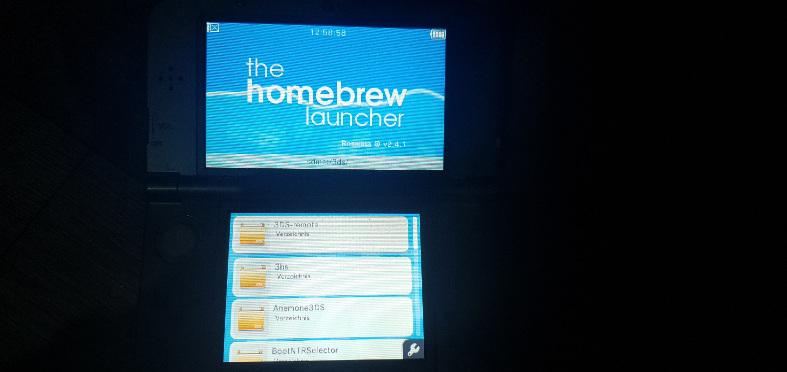
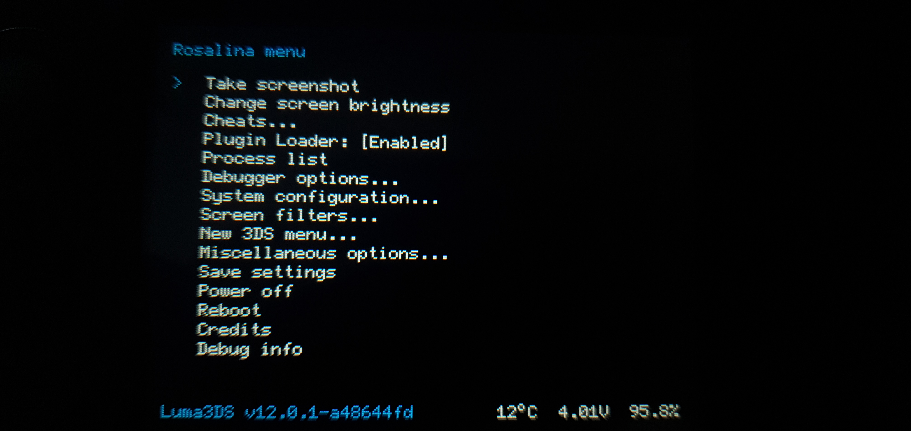
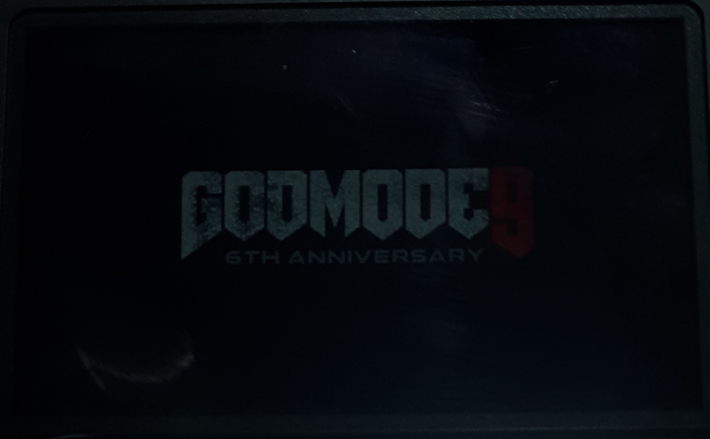

Es ist klar, dass ich meinen 3DS gemoddet habe, aber warum? Ich bekam meinen 3DS von einem Kumpel, der ihn seit einer Weile herumliegen hatte. Beim Start sah ich nur drei Spiele. Ich dachte mir, was soll ich damit machen? Da ich schon immer modden wollte, begann ich schnell damit.
Zuerst kaufte ich mir eine 256 GB MicroSD-Karte von meinem MediaMarkt des Vertrauens↓ 
alle Spiele darauf zu laden. Ich sicherte alle Dateien auf meinem PC als Backup. Dann formatierte ich die neue MicroSD-Karte als FAT32 mit dem Tool auf der Website FAT32 . ALLE DATEIEN GEHEN VERLOREN!!! Danach kopierte ich die Backup-Dateien auf die neue MicroSD-Karte und lud die Datei 1 herunter. Ich entpackte die ZIP-Datei und verschob die entpackten Dateien auf die MicroSD-Karte.
Von GitHub lud ich die Datei 2 herunter, entpackte sie und öffnete den Europe-Ordner, da dies die Region meiner 3DS-Version ist. Ich öffnete den Ordner mit der Version meines 3DS. Den Inhalt legte ich wieder auf die MicroSD-Karte. Nun waren alle Dateien auf der MicroSD-Karte, und ich konnte sie zurück in den 3DS stecken.
Nach dem Einschalten sah alles aus wie zuvor, und ich war bereit für die nächsten Schritte. Ich drückte die Schultertasten L & R, öffnete die Kamera und scannte den QR-Code↓.
Der Browser öffnete sich, und ich wurde mit einer Mitteilung begrüßt, dass das Sicherheitszertifikat nicht verifiziert werden kann. Ich klickte auf "Allow". Dann drückte ich den Sternenknopf unten links, fügte die Seite meinen Lesezeichen hinzu und kehrte zurück.
Ich drückte B, dann die drei Linien unten rechts und anschließend Einstellungen. In den Einstellungen drückte ich auf "Cookies löschen" und danach die Home-Taste. Sofort drückte ich A, um wieder in den Browser zu gelangen. Ich öffnete den "Go Go!"-Link, bestätigte die Benachrichtigung mit A, und nach einigen verdächtigen Sekunden im Homebrew Launcher war ich drin↓ 
Unten war ein Knopf namens "Slot Tool", den ich drückte. Die erste Option war "Install Exploit to wifi slots 1,2,3 & Shutdown", die ich mit A auswählte. Nach dem Herunterfahren der Konsole hielt ich die Knöpfe L, R, ↑, A und Power gedrückt, bis die Konsole im Safe Mode war. Ich drückte auf OK, akzeptierte und dann erneut OK.
Es versuchte ein Update zu machen, was fehlschlug, wie erwartet. Also drückte ich auf OK, bejahte die Frage, ob ich die Internet-Einstellungen einrichten möchte, und wählte die erste Verbindung aus. Ich änderte die Einstellungen, scrollte nach rechts und klickte auf "Proxy-Einstellungen". Danach ging ich zu "Detaillierte Einrichtung", und nun war ich im B9S Installer.
Oben stand eine Tastenkombination, der ich folgte. Nach der Installation drückte ich A, um die Konsole neu zu starten. Sie startete jedoch nicht ins Home-Menü, sondern in die Luma3DS-Einrichtung. Ich änderte nichts und drückte Start, um ins Home-Menü zu gelangen.
Jetzt öffnete ich den Download Play. In der App drückte ich L, ↓, Select, um ins Rosalina-Menü zu kommen↓ 
Dort ging ich zu "Miscellaneous Options" und drückte A, um das erste auszuwählen. Nachdem ich dreimal B drückte, um aus dem Rosalina-Menü zu gelangen, drückte ich die Home-Taste, schloss den Download Play und öffnete ihn erneut.
Dabei öffnete sich wieder der Homebrew Launcher↓
Noch einmal öffnete ich das Slot Tool, ging zu "Restore original wifi Slots 1,2,3" und drückte A. Ich öffnete den Download Play erneut, drückte L, ↓, Select, um ins Rosalina-Menü zu kommen. Dort ging ich zu "Miscellaneous Options", wählte "Dump DSP firmware" aus, drückte B, ging eins hoch und wählte dies aus. Dann ging ich aus dem Rosalina-Menü heraus und schaltete den 3DS aus.
Nach dem erneuten Starten des 3DS durch gedrücktes Halten der Start-Taste und Drücken des Power-Knopfes im Godmode9↓ 
drückte ich zweimal A, um ein Backup zu erstellen. Dann stellte ich die Zeit ein, drückte den Home-Knopf, ging zu "Scripts" und bestätigte "Finalize". Wieder drückte ich zweimal A und gab die Tastenkombination ein. Nachdem es fertig war, fuhr ich den 3DS herunter, steckte die MicroSD ein letztes Mal in meinen Laptop, ging zu GM9, OUT und kopierte die Dateien auf meinen Laptop in einem Backup-Ordner.
Nun nur noch die MicroSD zurück in den 3DS stecken, einschalten und fertig. Jetzt habe ich einen gemoddeten 3DS.